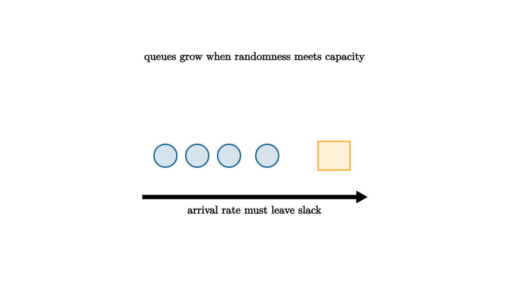

Waiting feels personal, but it has structure. A coffee shop, a bus stop, a call center, and an online checkout all ask the same question: do arrivals come faster than service can absorb them? If customers arrive at an average rate of six per minute and the counter can serve seven per minute, the line may still become long. Randomness creates clumps. Averages do not arrive evenly spaced.
Picture a coffee shop that can make one drink every 50 seconds on average. That sounds faster than the morning stream of customers, so the owner may be tempted to schedule only one barista. Then three office groups arrive within the same two minutes. The barista did not become slower. The arrival process simply spent several quiet minutes saving up a burst. The line is a record of those bursts that have arrived and have not yet been worked off.

source
let soft = |col, amount| lerp(WHITE, col, amount)
mesh scene = [
center{1.35u} Text("queues grow when randomness meets capacity", 0.62),
center{1.4l + 0.2d} fill{soft(BLUE, 0.18)} stroke{BLUE, 2} Circle(0.18),
center{0.9l + 0.2d} fill{soft(BLUE, 0.18)} stroke{BLUE, 2} Circle(0.18),
center{0.4l + 0.2d} fill{soft(BLUE, 0.18)} stroke{BLUE, 2} Circle(0.18),
center{0.2r + 0.2d} fill{soft(BLUE, 0.18)} stroke{BLUE, 2} Circle(0.18),
center{1.25r + 0.2d} fill{soft(ORANGE, 0.2)} stroke{ORANGE, 2} Rect([0.5, 0.45]),
stroke{BLACK, 2.5} Arrow(1.75l + 0.85d, 1.75r + 0.85d),
center{1.05d} Text("arrival rate must leave slack", 0.62)
]The simplest queue model has two clocks. One clock describes arrivals. The other describes service. If arrivals are independent and have no memory, the number arriving in a time window is often modeled by a Poisson distribution. If service times are also memoryless, we get the classic M/M/1 queue. The exact formulas are less important at first than the qualitative lesson: as utilization approaches one, waiting time grows sharply.
Utilization is the fraction of service capacity being used. A server that is busy 50 percent of the time has room to absorb bursts. A server that is busy 95 percent of the time may look efficient on a spreadsheet, but customers will experience the bursts as long waits. This is why a system with "only a little" spare capacity can feel much better than one with no slack.
The arithmetic makes the warning precise. If the arrival rate is $\lambda$ and the service rate is $\mu$, then utilization is $\rho=\lambda/\mu$. In the clean M/M/1 model, the average time in the system is $1/(\mu-\lambda)$. That denominator is the spare capacity. When $\mu-\lambda$ is large, bursts drain quickly. When it is tiny, each burst sits around long enough for the next burst to join it.
This is also why pooling helps. Four separate lines each need their own slack, because one cashier can be idle while another line is stuck behind a complicated order. A single shared line feeding four cashiers lets spare capacity move toward the next waiting customer. The service rate stays the same. The system uses idle moments more intelligently.
source
let soft = |col, amount| lerp(WHITE, col, amount)
"Light Load"
mesh line = [
center{1.25u} Text("50 percent utilization", 0.62),
center{0.8l} fill{soft(BLUE, 0.2)} stroke{BLUE, 2} Circle(0.18),
center{0.2l} fill{soft(BLUE, 0.2)} stroke{BLUE, 2} Circle(0.18),
center{0.75r} fill{soft(ORANGE, 0.2)} stroke{ORANGE, 2} Rect([0.55, 0.42]),
center{1.05d} Text("bursts have room to clear", 0.62)
]
play Grow(0.7)
"Tight Load"
line = [
center{1.25u} Text("95 percent utilization", 0.62),
center{1.5l} fill{soft(BLUE, 0.2)} stroke{BLUE, 2} Circle(0.18),
center{1.0l} fill{soft(BLUE, 0.2)} stroke{BLUE, 2} Circle(0.18),
center{0.5l} fill{soft(BLUE, 0.2)} stroke{BLUE, 2} Circle(0.18),
center{0r} fill{soft(BLUE, 0.2)} stroke{BLUE, 2} Circle(0.18),
center{0.5r} fill{soft(BLUE, 0.2)} stroke{BLUE, 2} Circle(0.18),
center{1.35r} fill{soft(ORANGE, 0.2)} stroke{ORANGE, 2} Rect([0.55, 0.42]),
center{1.05d} Text("small bursts become visible lines", 0.62)
]
play Trans(1.0)
"Slack"
line = [
center{1.25u} Text("capacity planning is probability planning", 0.62),
stroke{GREEN, 3} Arrow(1.3l, 1.3r),
center{0.2d} Text("service rate above arrival rate", 0.62)
]
play Trans(0.9)This lesson changes how we read everyday systems. A long line does not prove workers are slow. A short line does not prove the system is well designed. We need arrival variability, service variability, staffing, pooling, and slack. Probability makes the invisible burst pattern visible enough to manage.
The practical habit is to ask where the buffer lives. Sometimes the buffer is extra workers. Sometimes it is appointments, preorders, batching, a waiting room, or a web server queue. The best choice depends on the cost of delay and the cost of extra capacity. Once waiting has a shape, the design question becomes concrete instead of emotional.